Indian Summer School on Cellular Automata · 2026
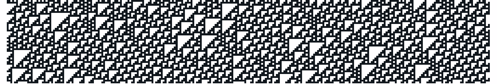
The problem
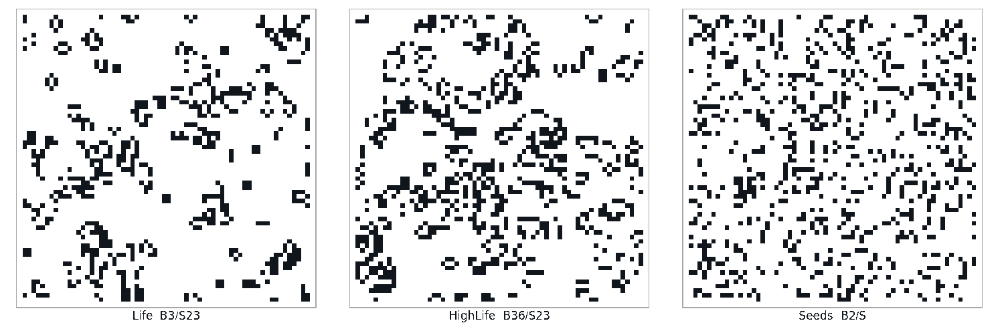
The same random 64×64 torus, 24 steps, three rules. Side by side, nothing says which pair is closest.
The question is not are these rules equal. It is how far apart are they, and that answer has to be a number.
The route
Which rules already are the same rule, even across different definitions.
Compare the whole finite dynamics as a graph, labels thrown away.
A printable code for that structure. Counts behaviours, ranks nothing.
A real number at last, but the vector length is the node count.
Fixed length, chosen by us. Comparable across states, neighbourhoods and dimensions.
All 256 elementary rules · Conway's Life on an exact 4×4 torus · five Moore and Von Neumann rules at 6×6 · 45 totalistic rules linked by mutation
Method 01 · similar behaviour
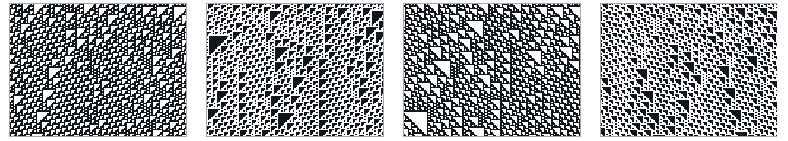
Relabel the states so every transition survives.
Reverse the neighbourhood; the evolution flips left to right.
A neighbour that never changes the outcome can be dropped.
A state that is never produced lives only in the initial condition.
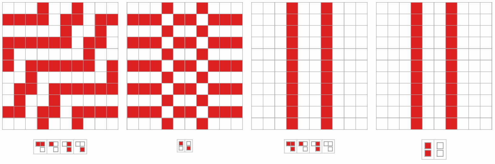
Left pair: 32,2 and 12,1 match once the blocks are shifted left. Right pair: 102,2 and 22,1 are identical outright.
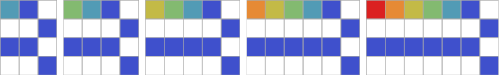
Rule 1 with 2, 3, 4, 5 and 6 states, started from a row holding every state. After one step the extra states are gone for good.
The first two are classical: together they collapse the 256 elementary rules to 88. The last two are new, and they cross between definitions.
Method 01 · across spaces
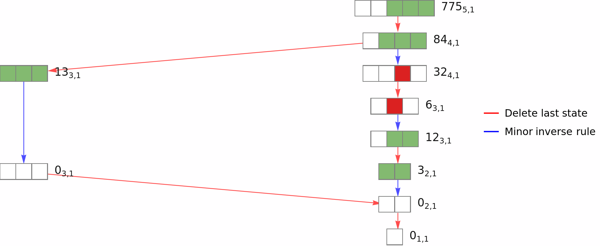
Each node is a rule vector, labelled rulestates,neighbours. Red deletes the last state, blue takes the minor inverse rule.
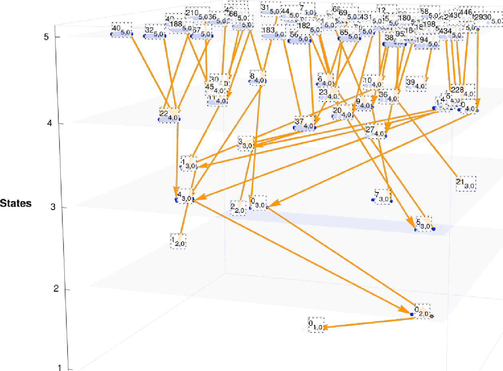
The same two relations over every rule up to five states. One plane per state count.
Apply the relations again and again and the rules stop being a flat list. They become a graph, with an edge wherever one rule reduces to another.
The shortest path between two rules then says how far apart they sit, and rules in completely different spaces turn out to be neighbours.
The construction everything else uses
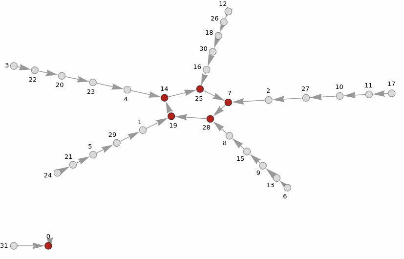
Rule 30 on a cyclic space of 5 cells. 32 configurations, 32 edges.
Evolve the rule from every configuration of a finite cyclic space. Each configuration gets a single outgoing edge, so the whole dynamics collapses into one functional graph.
Red marks the periodic core, the part the system never leaves: here one fixed point and one cycle of length five. Everything else is transient and drains into it.
This one object is what the remaining four methods compare. They differ only in what they read off it.
The graph is exact but it grows as kn. 5 cells give 32 nodes, 20 cells give a million, and Life on a 6×6 board gives 236.
Method 02 · isomorphism
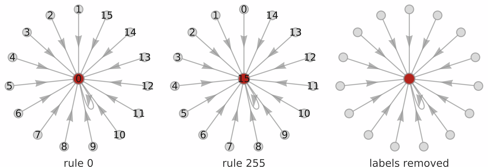
Cyclic space of 4 cells. Rule 0 drains into the all-zero configuration, rule 255 into the all-one. Strip the labels and the same graph is left.
Two rules whose transition graphs are isomorphic behave identically, whatever their labels say. The mapping is the state permutation from method 01, found rather than assumed.
Which is the problem. It recovers what we already had, and it answers the same way.
Life and HighLife have no isomorphism between them, so this method returns different and stops. That is true and useless.
Method 03 · canonical form
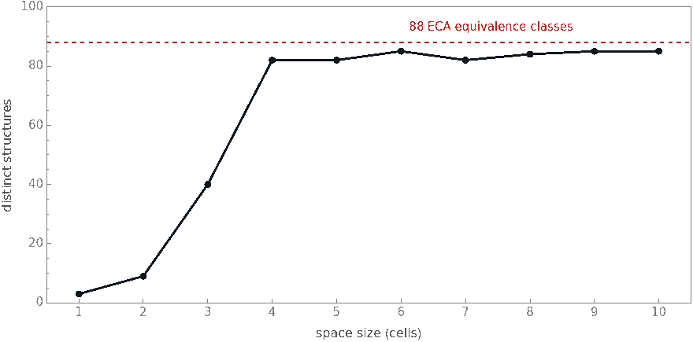
Distinct canonical forms among the 256 elementary rules, by space size.
Testing isomorphism pair by pair is expensive. Instead, prune every leaf into a code that remembers its parent, repeat until only cycles are left, then encode the cycles. Equal codes mean isomorphic graphs.
Now the 256 rules can be sorted in one pass. The count of distinct structures climbs fast, then stops: 40 at three cells, 82 at four, and never past 85.
Four cells already separates almost every one of the 88 known classes. More space buys almost no new information.
Good for counting behaviours, useless as an index. The comparison is still exact, so the life-like rules come back as simply different from Life.
Method 04 · spectrum
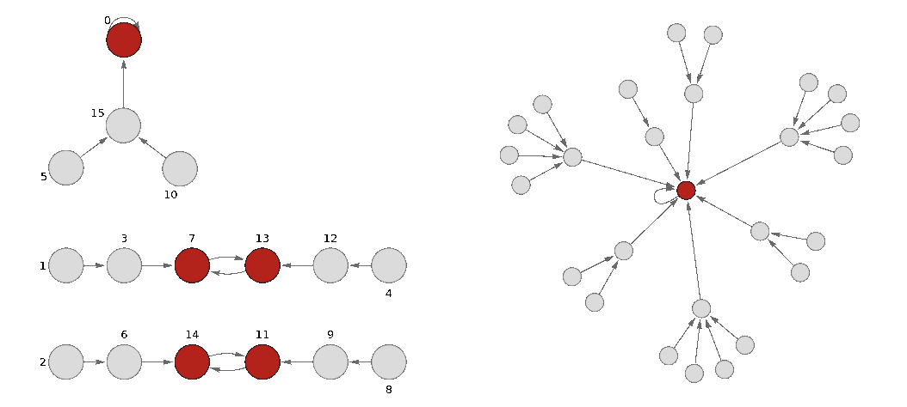
Take the adjacency matrix of the transition graph, read off its eigenvalues, treat them as a feature vector. Cosine distance between two vectors is finally a number on a scale.
The matrix is not symmetric, so the eigenvalues are complex. Splitting real and imaginary parts keeps the information and doubles the length.
And that length is the problem. It is the node count, so the space fixes it, not us.
Comparing a two-state rule with a three-state rule means lining up 32 numbers against 54. There is no honest way to do it.
Method 05 · spectral moments
Evolve j steps from every configuration and count how many came home. The vector runs m1 to mkmax, and kmax is our choice.
The length no longer depends on the graph. Two rules with different state counts, different neighbourhoods, even different dimensions, now give vectors of the same length.
The cosine distance between those vectors is the similarity index.
Rule 30 on 5 cells. The lone fixed point gives m1 = 1/32; the five-cycle lifts m5 to 6/32 = 0.188.
Refinement · rotations
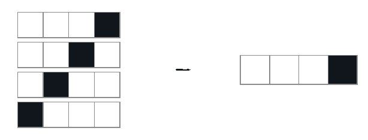
On 4 cells, 0001, 0010, 0100 and 1000 become a single node.
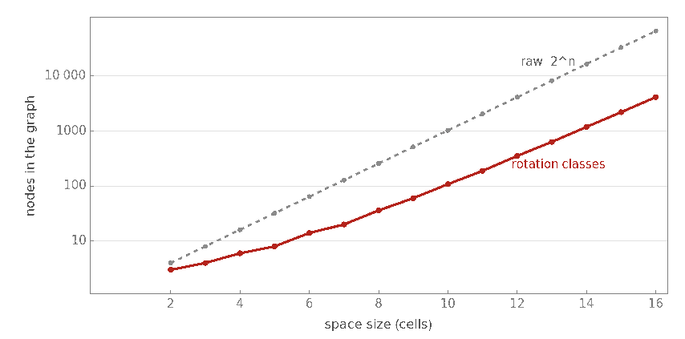
A cyclic space has no origin, so two configurations that differ only by a shift are the same picture. Identify them and the graph shrinks.
The node count stops depending on the rule and becomes the number of binary necklaces: 6 at four cells, 36 at eight, 4116 at sixteen instead of 65 536.
It also removes an artefact: on raw configurations, rules 15, 85, 170 and 240 merge only at even space sizes.
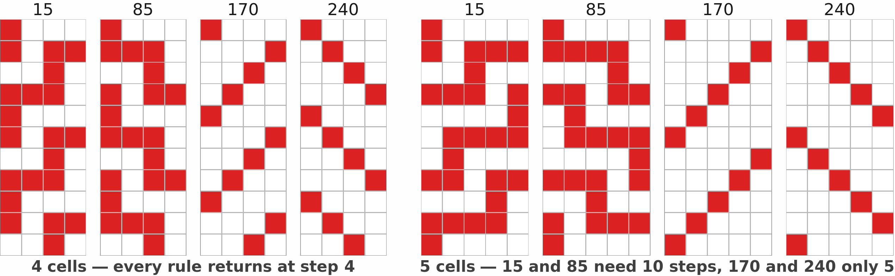
One live cell, raw configurations. 15 and 85 are the complemented shifts, 170 and 240 the plain ones.
Quotient by rotation and the parity vanishes: at every size only 15~85 and 170~240 merge.
Results 01 · the 256 elementary rules
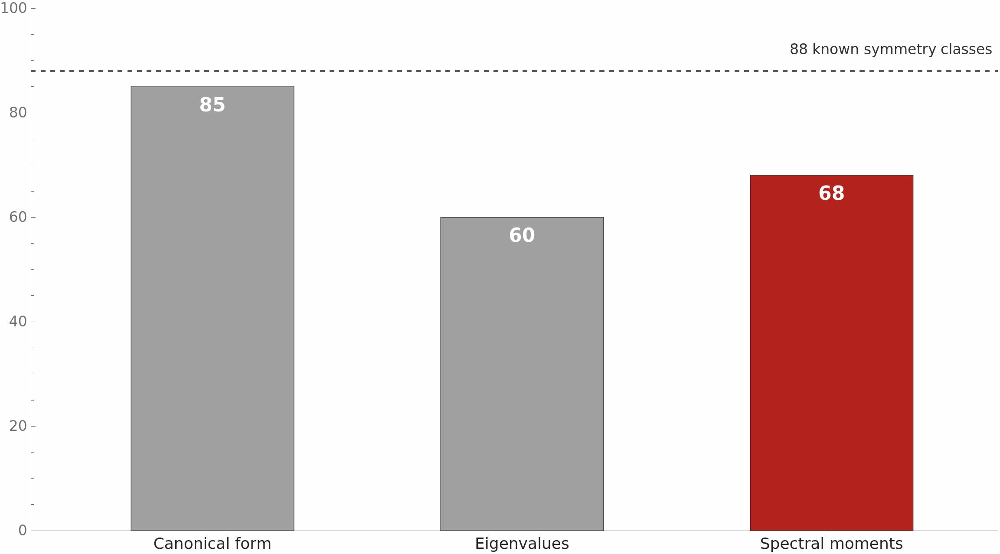
Distinct classes found among the 256 rules. Canonical form and eigenvalues on one rotation-quotiented space of 10 cells. Spectral moments on two of them, 9 and 14 cells, stacked.
One testbed, three methods, the same rotation quotient throughout.
The moments separate more rules than the full spectrum, from a vector ten times shorter.
Canonical form separates more: it keeps the whole tree, not just the cycles. It still cannot rank what it separates.
One space alone tops out at 63, on 14 cells; more cells or a longer vector do not move it. Adding a second space of 9 cells is what reaches 68.
Results 01 · the 256 elementary rules
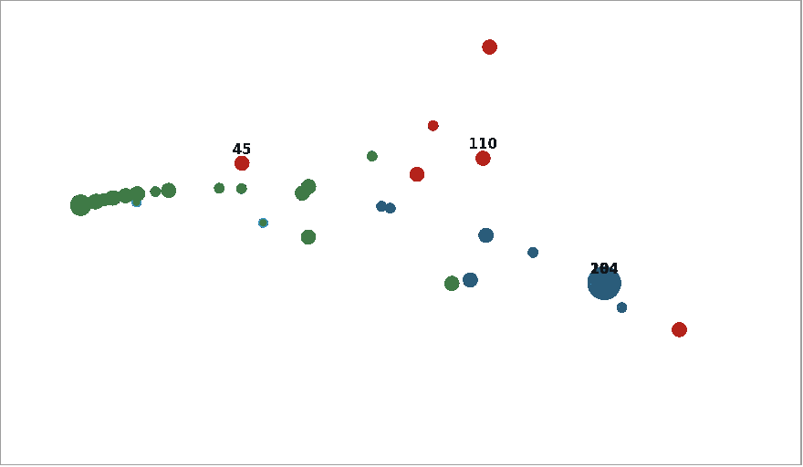
Unit-normalised moment vectors projected to two dimensions. Dot area is how many rules share that vector.
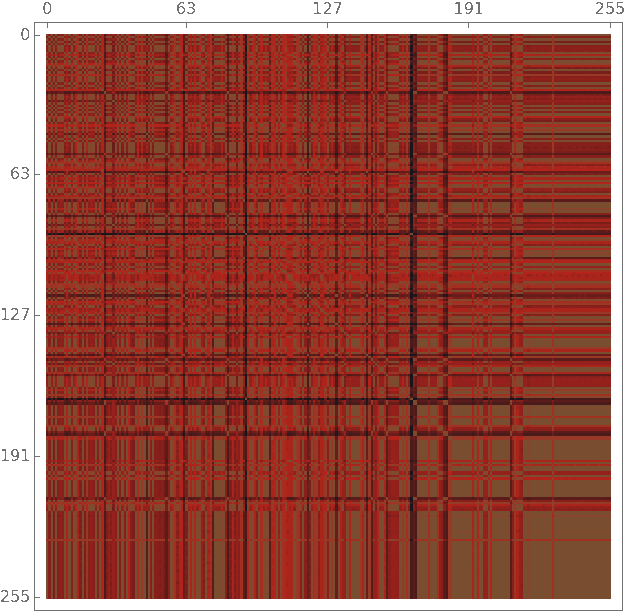
All 256 × 256 cosine distances.
Rotation-quotiented graph, 14 cells, kmax = 10. The 256 rules collapse to 63 distinct vectors.
The chaotic and complex rules really do land together. But the boundaries are soft, and soft boundaries are what a spectrum looks like.
Results 02 · Conway's Life, exact
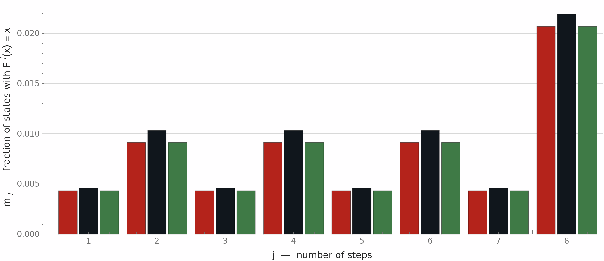
Exact 4×4 torus, 16 cells, 4156 translation classes, kmax = 8.
A board this small is fully enumerable, so these moments are exact rather than estimated. Two Moore variants of Life: one that also survives on eight neighbours, one that is also born on eight.
The birth variant returns a vector identical to Life's, digit for digit. Being born on eight live neighbours never happens in a way that reshapes the cycle structure.
One board, one size. Suggestive, not established. It needs larger grids and many more B/S variants.
Results 02 · sampling at 6×6
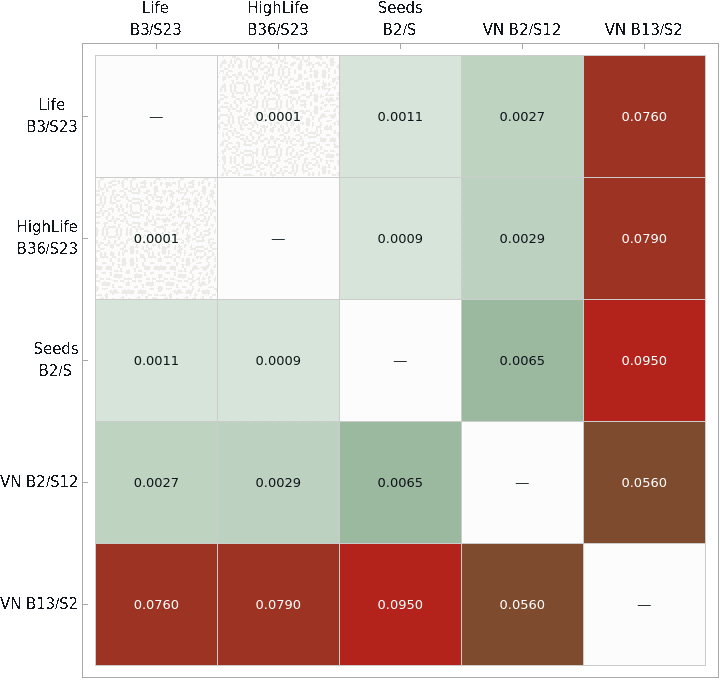
36 cells means 236 configurations and no exact graph. Instead: 3000 random starts per rule, a 200-step transient to settle onto an attractor, then up to 150 steps to detect its period.
Von Neumann B2/S12 lands inside the Moore group, between 0.0027 and 0.0065. Only B13/S2 separates, at 0.056 to 0.095.
So the measure is not reading off the neighbourhood template. It responds to the dynamics a rule actually produces.
of B13/S2 samples never resolved a period inside 150 steps
between raw and rotation-quotiented vectors, for 4 of the 5 rules
The sampled estimate is weighted by basin size, so it compares rules against each other, not against the exact 4×4 numbers.
Results 03 · totalistic rules, k = 3
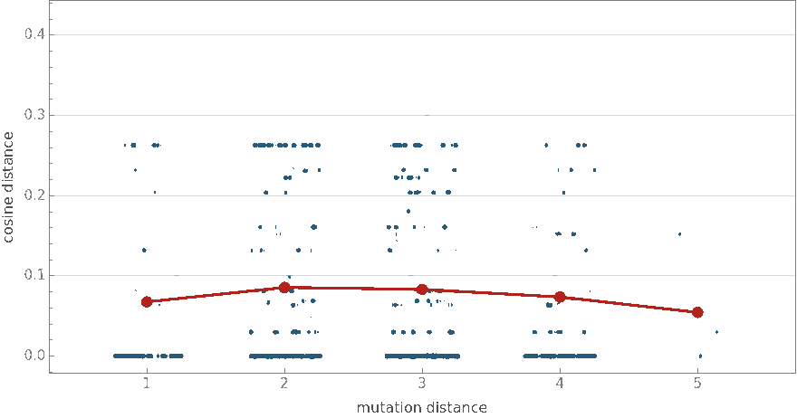
All pairs among the 45 rules. The red line is the mean cosine distance at each mutation distance.
A test on someone else's question. In the totalistic space k = 3, r = 1, a rule has a finite lifeform when a single active cell grows and then dies out completely.
Of 729 candidate rules, 45 do, and all 45 form one connected component under single-digit mutations of the rule code. The connectivity claim holds.
Spearman correlation between mutation distance and spectral cosine distance. Pairs with identical evolution still reach 0.276.
A lifeform is one initial condition. The moments are all of them. The two measure different things, and the flat red line says so.
What is still open
Four cells already separates almost every elementary rule. Find the smallest space that keeps the distinctions in general, and stop paying for the rest.
Grids past 4×4 and three-dimensional automata. The survival-over-birth result rests on one small board and needs many more B/S variants before it means anything.
Nearly a quarter of B13/S2 runs found no period in 150 steps. Long-period or genuinely chaotic, and the estimator has to be able to say which.
The transition graph grows exponentially in cells and states. Better sampling, spectral approximation and further graph reductions are what make this usable at scale.